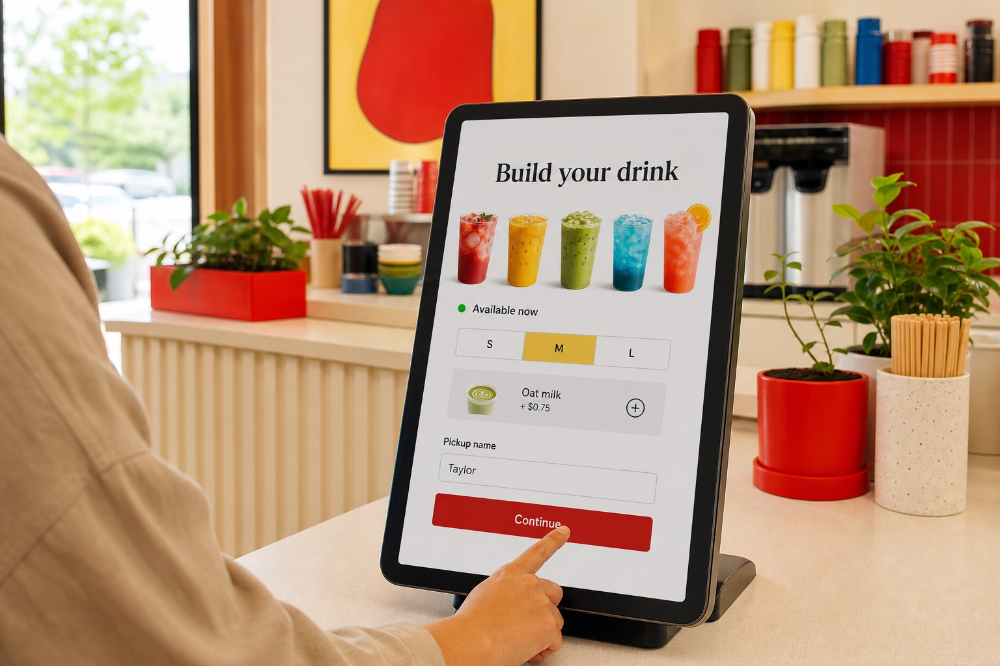
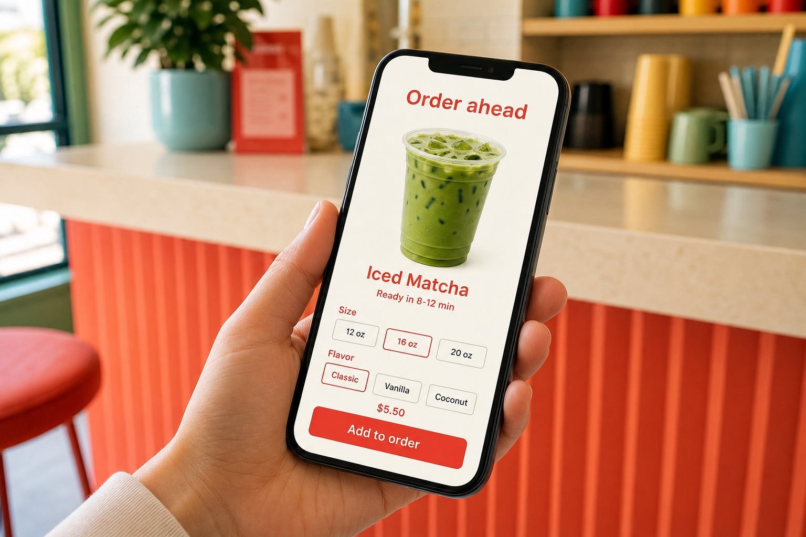
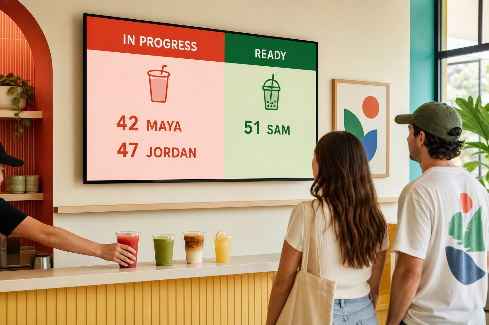

Order. Make. Hand off. Learn.
DrinkFlow KDS keeps the whole drink counter moving.
Keep the preparation queue focused while mixed sales, customer ordering, pickup displays, full-order lookup, menu availability, and owner reporting stay connected in one clear service flow.
One mixed order arrives
- 2x Iced latte + modifiers
- 1x Matcha latte
- 1x Retail item
- 1x Bakery item
One transaction stays intact. Each screen gets only the context it needs.
Focus Board
3 drinks to makeModifiers, timers, names, and drink-by-drink checkoffs.
Full order
5 items preservedRetail, food, service type, notes, source, and order history.
Pickup flow
Making → ReadyOrders Up, drive-thru, online-order, and menu displays.
Decision view
Demand + timingDrink revenue, volume, mix, service timing, guidance, and exports.
The differentiator
A regular KDS shows tickets. DrinkFlow understands the transaction around them.
Hybrid counters do not sell drinks in isolation. A sale may also contain retail, food, pickup details, customer notes, and multiple service types. DrinkFlow separates the work without throwing away the business context.
Only makeable drinks, modifiers, names, and checkoffs.
The entire sale is still available when staff or owners need it.
Staff operations
Two levels of detail, because a rush and a transaction question are different jobs.
Open interactive sampleGive the bar the shortest path to the next drink.
Mia#T1002Making 3 min
2x Latte
Extra hot, oat milk 1 non-drink item hidden hereDrink-only tickets, modifiers, stage timers, customer names, and large touch controls help the team move without reading the entire basket.
Bring the whole order back when context matters.
Staff can see every item, who took the order, service type, order source, notes, and customer callout name. Hidden from prep never means lost.
Finish a multi-drink order one item at a time.
Drink checkoffs keep a large order readable and can move the ticket forward when its drink work is complete.
Find completed transactions by day.
Review drink and non-drink items, modifiers, notes, category, time, and status after the ticket leaves the live board.
Practice without touching live orders.
Sample tickets and counts let staff learn the workflow without changing production data.
Customer flow
The customer experience is part of the same system.
DrinkFlow does more than organize the bar. It connects how customers order, what the menu can sell, where an order is in the process, and how pickup is communicated.



Menu + availability
Keep customer-facing drink menus aligned and mark unavailable items without rebuilding the display.
Online or self-order
Offer a branded ordering path or kiosk that sends drink work into the same operating flow.
Live preparation
Names, modifiers, service type, online due time, and item checkoffs stay visible to staff.
Pickup displays
Use Orders Up, Online Orders, and Drive-Thru views to show useful status without exposing internal detail.
Volume Board
Share the rhythm of the day with a customer-safe view of hourly drink volume.
Owner Reports
Sample view
Today7 days30 daysQuarterCustomCSV / Excel / PDF
Owner decisions
Measure the counter you actually run.
There is no borrowed industry statistic pretending every drink should take the same amount of time. DrinkFlow builds a baseline from your own service, then makes the patterns visible enough to test improvements.
- Drink revenue, tax, units, top items, and category mix
- Hourly demand, busiest windows, and slower periods
- Start-to-ready timing by hour and drink name
- Multi-drink order behavior and non-drink attachment context
- Plain-language preparation and staffing cues
- Custom date ranges with CSV, Excel, and PDF exports
Evidence behind the product
Real service confirmed the problem DrinkFlow was built to solve.
The first live deployment showed that mixed drink, retail, and food sales are not unusual exceptions. They are a normal counter condition. DrinkFlow responds by separating what staff must make from everything the business still needs to know.
See the full field case studyof drink orders in the first deployment also included non-drink items.
One sale. Different views. No lost context.
- The preparation board receives only drink work.
- The complete transaction stays available for lookup.
- Customer displays receive clear, customer-safe status.
- Owner reports retain timing, demand, and order-mix context.
Evidence, not overpromising
The same deployment established a measurable start-to-ready baseline. It has not yet proven a sustained speed gain, so DrinkFlow does not sell that claim. It sells clearer coordination and the ability to test improvements using each shop's own service data.
Where the fit is strongest
For counters where drinks, merchandise, food, and pickup collide.
Coffee shops
Smoothie and juice bars
Food trucks
Drink carts
Event beverage stands
Hybrid retail counters
Drive-thru pickup
Early shop pilots
Start with one counter problem we can measure.
Show us one busy service day: what customers order, what staff need to see, where pickup gets confusing, and what the owner still cannot measure. The first conversation is about fit and evidence, not forcing a giant software setup.
1. Workflow review
2. Focused product walkthrough
3. One measurable pilot question